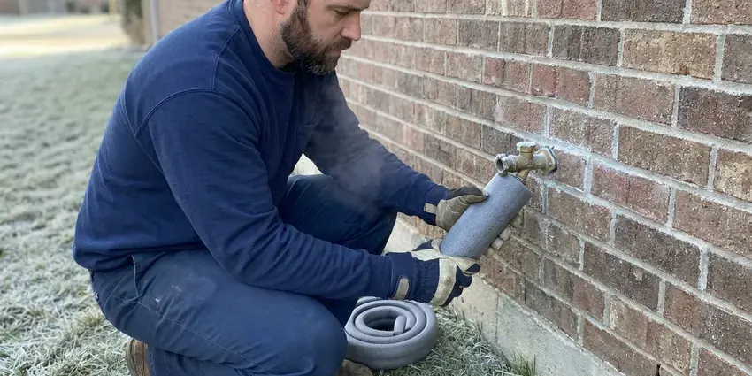

Drains Camera Inspection in Leesburg, VA
A plumber says you need a new sewer line? See it for yourself first. We scope lines in Leesburg, VA.
- Pre-Purchase Scopes
- Honest Reports
- Same-Day Camera Visits
- Above-Ground Locating

Book a Drain Camera Inspection in Leesburg, VA
If the pipe is fine, that is what the report says. No push for a repair you do not need.
Drain Camera Inspection That Shows You the Problem in Leesburg, VA
FBN Plumbing uses self-leveling HD push cameras and sondes to inspect lines from 1 1/2 inch branch drains to 6 inch mains. The image stays upright. Every defect is located from above and marked with paint or a flag, which keeps any later excavation small and accurate.
Our expertise includes:
- Root intrusion and broken pipe identification
- Cleanout and septic line locating
- Lost item location in drain lines

Additional Plumbing Maintenance Services in Leesburg, VA
Our maintenance and specialty plumbing services in Leesburg, VA catch small problems before they become emergencies.


Customers
Why Choose FBN Plumbing for Drains Camera Inspection in Leesburg, VA?
Every inspection ends with a locate. The footage alone is not enough. The sonde in the camera head sends a signal up through the soil, letting us paint the spot and note the depth on the surface.
- Plain Explanations, We walk you through each finding without jargon while the footage plays.
- Upfront Pricing, You know the price before the camera goes in.
- No Digging, The camera enters through a cleanout, toilet or vent.
Citywide Coverage
No matter where you are in Leesburg, we can usually get a camera in the line quickly. Weekends sometimes too. We schedule by area, which keeps drive times short and helps us fit home buyers in well before their inspection deadlines.
Experienced Team
Our camera techs have reviewed thousands of feet of pipe. They read footage fast. They can tell a minor scale deposit from a serious crack, and they know which findings need attention this month and which can wait a few years.
Safety-First Approach
Your home gets protected while we work. Floors are covered first. The push reel stays on a mat, and we take shoes off or wear covers inside so nothing from the sewer line gets tracked across your floors.
Trusted Certified Leesburg Plumbing Services Professionals
At FBN Plumbing, we take pride in licensed, certified plumbing services throughout Leesburg, VA. Credentials matter in this trade. Our plumbers hold recognized industry credentials, and they follow strict safety and quality rules on every repair, installation and maintenance call we run.
Call Us Now PHCC Plumbing Contractor Recognition
PHCC Plumbing Contractor Recognition Better Business Bureau (BBB) Accreditation
Better Business Bureau (BBB) Accreditation Angi Certified Pro
Angi Certified Pro ISO 9001 Quality Management Certification
ISO 9001 Quality Management CertificationDrain and Sewer Scopes for Leesburg, VA Homes
Post-Repair Inspection in Leesburg
A new section of pipe should be straight, sealed and sloped correctly. We check on video. After a repair in Leesburg, we run the camera through the new section and the joints on either side to confirm nothing shifted when the trench was backfilled. The video goes in your files.

Pre-Purchase Sewer Scope in Leesburg, VA
Home inspections usually leave out the sewer line. That is a big gap. A pre-purchase scope shows the condition of the lateral before you close, and homes with clay or Orangeburg fiber pipe benefit the most since those materials crack, sag and let roots in as they age. Our findings support price talks.
Root Intrusion Detection in Leesburg, VA
Root problems tend to show up first in older clay and cast iron laterals. They enter at joints. Our camera in Leesburg, VA shows each joint where roots are coming through and how thick the growth is, which tells you whether a cutting and a treatment schedule will hold or the pipe needs lining. Footage makes the choice easier.
Post-Repair Drain Inspections in Leesburg
Any repair or cleaning in Leesburg can get a follow-up camera pass from FBN Plumbing. It shows the work held. You see that the blockage is gone, the new section is aligned with the old pipe and no joints were knocked loose during the work around it. Some warranties require it.
Camera Inspection Cost vs. Exploratory Digging in Leesburg, VA
A camera inspection usually costs a few hundred dollars. Digging costs much more. Without a camera, a crew may open two or three holes trying to find a break that the camera and locator would have pinned to one spot within a foot. With footage and a mark on the ground, the excavation stays small. Less lawn gets torn up.
Camera Inspections for Insurance and HOA Claims in Leesburg, VA
Insurers usually want proof of the cause after a backup or leak. Video is hard to argue with. Our recording and written findings document roots, breaks and blockages with their location, and HOAs and property managers use the same reports to decide who owns a shared line. Files are easy to email.
Identifying Tree Root Intrusion in Leesburg, VA
Roots on camera look like fine hairs at first. Later they fill the pipe. Our footage shows where they come in, how many joints are affected and whether the root mass is a light fringe that cleaning will handle or a dense ball that is already cracking the pipe. That decides the fix. Light roots need cutting, heavy ones need lining or replacement.

Identifying Specific Pipe Damage in Leesburg
Each kind of damage looks different on camera. Cracks show as dark lines. Offsets show as a lip where one pipe section has dropped below the next, bellies show up as standing water that the camera head dips into, and corrosion on cast iron looks like rough, flaking scale along the bottom of the pipe. Knowing which one you have sets the repair.
A Drain Camera Technician Near You in Leesburg, VA
We come back too. Re-checks are simple to book. After a repair or a jetting, the same crew can verify the work on video.
Home buyers in Leesburg often have only a few days to get inspections done. Option periods are short. We try to fit sewer scopes in quickly, and the footage and written findings usually reach you the same day so you can bring them to your agent before the window closes.
FBN Plumbing at a Glance
- Fully licensed plumbing team covering Leesburg, VA
- 24/7 emergency service with same-day scheduling
- Clear written estimates, no hidden fees
- 4.9-star rated by 798+ Virginia customers
Leesburg Map
Leesburg Information
- Population
- 49,312
- Area codes
- 703/571/240
- Service area
- Leesburg and towns within a 40 mile drive
- Nearby
- Reston, Centreville, McLean, Arlington
Housing in Virginia spans centuries, from historic homes with cast iron and galvanized pipe to newer subdivisions plumbed with PEX. Sewer lines that run through yards with big trees pick up roots and cracks out of sight, so a camera is the fastest way to know what is down there in Leesburg, VA.
Expert Services
Call FBN Plumbing for reliable plumbing work done by licensed pros in Leesburg, VA.
Our Specialized Plumbing Services in Leesburg, VA
At FBN Plumbing, we handle the full list of plumbing services across Leesburg, VA. From leak detection to full system installs, our team works fast and charges fair prices on homes and commercial properties alike. Take a look at our core services below:


From Cleanout Cap to Recorded Video in Leesburg, VA
Here is how FBN Plumbing runs a drain camera inspection in Leesburg, VA, from start to finish.
Book a Time
Call (434) 230-6997 and pick a time that works at your Leesburg property.
Set Up
The tech protects the area and opens the cleanout or pulls a toilet. Blocked lines get cleared first.
Inspect the Line
We guide the camera through the pipe, pausing at each defect. The footage is recorded.
Frequently Asked Questions About Drains Camera Inspection in Leesburg
Most camera inspections in Leesburg, VA run $200 to $500. Line length matters. A short branch line through an easy cleanout sits at the low end, while a long main with no cleanout, a pulled toilet or a full written report for a buyer lands toward the top. You get a quote before we start.
Clogs that keep coming back. It is the most common reason. Slow drains in several fixtures, sewer odors and gurgling are also strong signs. Older Leesburg homes with big trees are worth scoping even without symptoms.
We clear it. The camera goes back in after. Depending on what it is, we cable, jet or fish out the blockage and then inspect the cause. You get options if the pipe is damaged.
Roots, cracks and offset joints. Sags and rust show up as well. The camera also shows grease buildup, collapsed sections, foreign objects and bad connections. Each finding points to cleaning or repair.
It can help. The sonde makes it possible. We push the camera down the line toward the tank, then track the signal from above to mark the tank inlet on your property in Leesburg. It also finds buried cleanouts.
Most take 45 to 90 minutes. Short lines go quickly. Lines without a cleanout, with buildup or long runs take more time. We give you an estimate before starting.
We stand behind our footage and locating marks. It shows what it shows. If a repair we recommend uncovers something different from our report, we work with you to make it right, whether that means adjusting the scope of the repair or the price. That has rarely come up.
Usually not by itself. Preventive inspections are not covered. If the inspection is part of diagnosing damage your policy already covers, such as a sewer backup that soaked flooring, some or all of the cost may be included in the claim. Check with your insurer before booking.
What People Are Saying About Our Plumbing Experts?

Carlos V.
Our house still had galvanized pipe, and upstairs the shower was a trickle. The crew repiped everything in PEX over three days and patched every drywall hole before they left. The pressure difference is night and day.
Repiping · Centreville, VA
Mark T.
The floor drain in our office break room backed up every few weeks. The plumber ran a cable, then put a camera down and found roots at a joint about thirty feet out. Seeing it on the screen made the decision easy.
Drain Cleaning · Leesburg, VAPaul B.
Our pit pump ran nonstop even in dry weather. The plumber found the check valve was stuck open, so the same water kept cycling back into the pit. New valve, new float switch, done in an hour. It runs quiet now.
Sump Pump · McLean, VA
Lisa C.
Water was pouring out from under the washing machine on a holiday weekend. FBN Plumbing talked me through closing the valves over the phone and had a plumber at the house within ninety minutes. It was a burst fill hose.
Emergency Plumbing · Centreville, VA
Angela D.
Our sump pump quit during a storm and the water was an inch from the basement carpet. FBN Plumbing put in a new pump with a battery backup that same evening. We have had two heavy rains since. It kicked on both times.
Sump Pump · Arlington, VARachel N.
Hard water was leaving white crust on every faucet and our dishwasher was struggling. The tech tested the water, recommended a softener sized for a family of five, and installed it with a bypass valve in one afternoon. The spots on our glasses are gone.
Water Softener · Centreville, VA